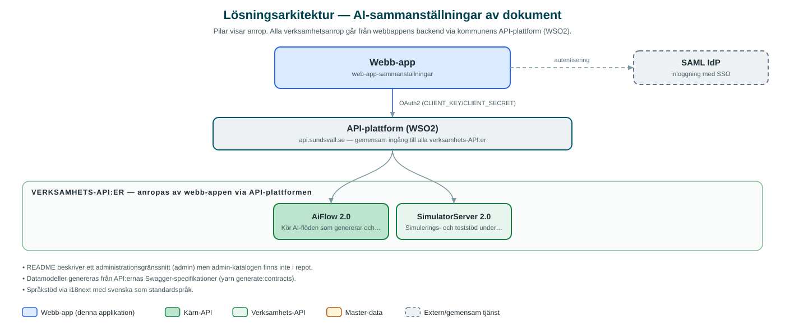

AI-sammanställningar av dokument
Stegvis verktyg där medarbetare med AI-stöd sammanställer underlag till färdiga dokument som granskas och laddas ner som Word-filer.
Om applikationen
Tjänsten hjälper medarbetare att ta fram sammanställda dokument, till exempel skrivelser, med hjälp av AI. Användaren väljer först vilken typ av dokument som ska sammanställas, fyller i uppgifter i ett formulär och låter sedan tjänsten generera dokumentets delar steg för steg.
Varje genererad del kan granskas och genereras om med en kort instruktion, till exempel att förkorta, förlänga eller lägga till innehåll. Om tidigare steg ändras flaggar tjänsten vilka delar som kan behöva uppdateras.
Innan dokumentet laddas ner som Word-fil måste användaren intyga att innehållet granskas och godkänns manuellt, eftersom stora delar är automatiskt sammanställda med AI. Inloggning sker med kommunens gemensamma inloggning.
Det här stödjer applikationen
- Val av dokumenttyp – Användaren väljer vilken typ av dokument som ska sammanställas utifrån fördefinierade flöden.
- Uppgiftsinsamling – Formulär där användaren lägger till de uppgifter som behövs för sammanställningen.
- AI-generering steg för steg – Dokumentets delar genereras med AI och kan genereras om med korta instruktioner.
- Ändringsspårning mellan steg – Delar som kan påverkas av ändringar i tidigare steg markeras som att de behöver uppdateras.
- Nedladdning med granskningsintyg – Färdigt dokument laddas ner som Word-fil efter att användaren intygat manuell granskning.
Teknisk dokumentation
Nedan beskrivs hur applikationen är uppbyggd, vilka API:er den använder och vad som krävs för att driftsätta den. Informationen är härledd ur källkoden och dess konfiguration på GitHub.
Arkitektur

Applikationen består av en webbaserad frontend (Next.js 16 (App Router), React 19, sk-web-gui, Tailwind CSS, i18next) och en backend (Node.js, Express 5, routing-controllers, TypeScript) som utvecklas i samma kodbas. Verksamhetsanrop går via kommunens gemensamma API-plattform (WSO2) – frontend pratar aldrig direkt med underliggande system. Inloggning: SAML (SSO). Övriga integrationer som förekommer i koden: SAML IdP, WSO2 API-gateway.
Teknikstack
- Frontend: Next.js 16 (App Router), React 19, sk-web-gui, Tailwind CSS, i18next
- Backend: Node.js, Express 5, routing-controllers, TypeScript
- Test: Jest (frontend och backend), Cypress
API-beroenden
Applikationen konsumerar följande API:er via kommunens API-plattform. Versionerna är hämtade ur källkodens API-konfiguration.
| API | Version | Användning |
|---|---|---|
| AiFlow | 2.0 | Kör AI-flöden som genererar och sammanställer dokumentets delar. |
| SimulatorServer | 2.0 | Simulerings- och teststöd under utveckling. |
Konfiguration och driftsättning
- Backend: .env.example.local kopieras till .env.development.local/.env.test.local
- CLIENT_KEY och CLIENT_SECRET för WSO2-applikation som prenumererar på API:erna
- SAML-inställningar: SAML_ENTRY_SSO, SAML_IDP_PUBLIC_CERT samt privata/publika nycklar
- API_BASE_URL mot api-test.sundsvall.se och MUNICIPALITY_ID (2281)
- Frontend: .env-example kopieras till .env
Noterbart ur källkoden
- README beskriver ett administrationsgränssnitt (admin) men admin-katalogen finns inte i repot.
- Datamodeller genereras från API:ernas Swagger-specifikationer (yarn generate:contracts).
- Språkstöd via i18next med svenska som standardspråk.
Källkod
Källkoden är öppen och finns hos Sundsvalls kommun på GitHub. I källkodsförrådet finns även instruktioner för att klona, konfigurera och starta applikationen i egen miljö.